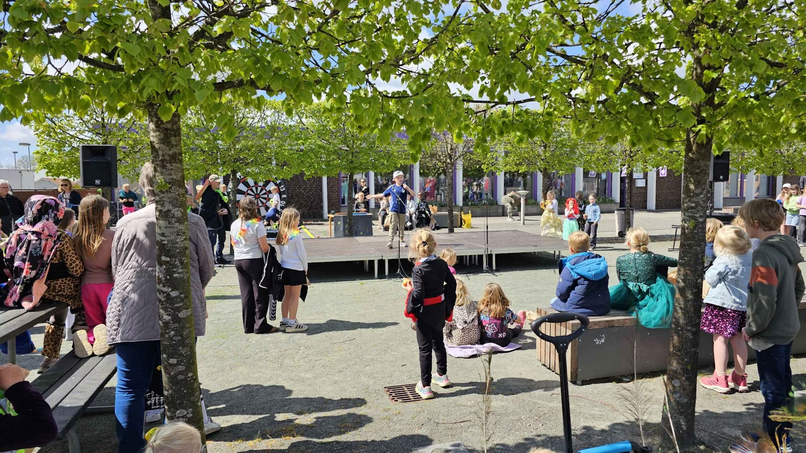

Pulsen i Vest
Arrangementer, oplevelser og lokale historier i området.
Besøg Pulsen i Vest →Følg med hos TEB og de lokale medier. Find også oplevelser og fællesskaber i området.

Nyheder fra Tistrup og Hodde. Læs hele historien hos Tistrup Nyt.
Henter nyheder…
Nyheder, billeder og små glimt fra livet i Tistrup. Her kan du følge vores seneste opslag direkte fra Facebook.
Se alle opslag på FacebookHvis opslagene ikke vises her, kan du altid åbne Facebook-siden via knappen.
Her finder du andres nyheder, kalender og tilbud. Hver side har sit eget indhold og åbner i en ny fane.
Arrangementer, oplevelser og lokale historier i området.
Besøg Pulsen i Vest →Nyheder og kalender for Tistrup og Hodde.
Besøg Tistrup Nyt →Nyheder, foreningsliv og historier fra lokalområdet.
Besøg Tistrupnews →Lokale nyheder og livet omkring os.
Besøg VORES Tistrup →Varde Kommunes indgang til lokale fællesskaber og tilbud.
Besøg Fællesskaber i Varde →